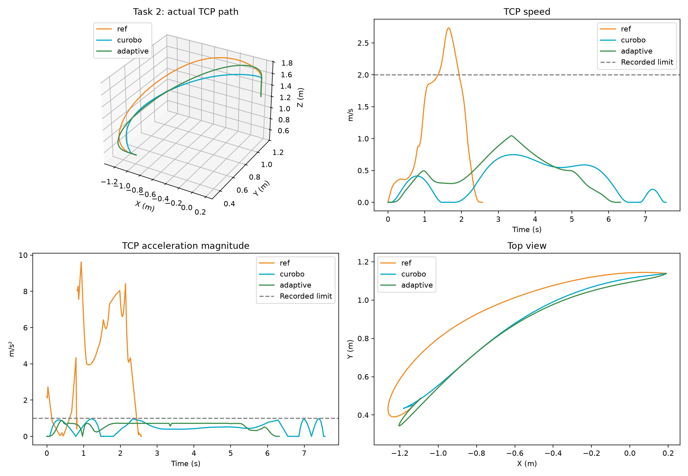

Comparing 236e7d6c, the reference selected in your screenshot. These numbers describe robot travel time, not planning latency.
The reference flows through its waypoints, but reaches 2.74 m/s and 9.62 m/s². Its recorded TCP limits are 2 m/s and 1 m/s². Current cuRobo respects those limits and stops at every part boundary. Its path is shorter, so distance does not explain the slowdown.
| Trajectory | Travel time | Join angles | Result |
|---|---|---|---|
| Original reference | 2.57 s | 0.38° / 0.03° | Exceeds recorded TCP speed and acceleration |
| Current cuRobo | 7.56 s | 54.20° / 23.90° | Qualified published baseline |
| Adaptive continuous-motion prototype | 6.32 s · 16.4% shorter | 0.05° / 0.03° | Flows through both joins; exact export passes 1200 Hz Cartesian audit, recorded joint v/a/jerk caps and original FCL |
| Timing prototype | 7.02 s · 7.2% faster | 54.20° / 23.90° | Same path resampled; constraint and FCL checks pass |
| Smooth-join prototype | 8.29 s | 0.06° / 0.03° | Smoother geometric joins; constraint and FCL checks pass; slower |

New result: curvature-aware timing plus local speed limits around the joins reduces travel to 6.32 seconds. TCP speeds through the two joins are approximately 0.329 and 0.231 m/s, rather than stopping. Peak measured TCP speed is 1.045 m/s and acceleration is 0.875 m/s². This is an offline CPU post-processing experiment on a native cuRobo path; planning latency has not improved or been benchmarked for this candidate.
Next: generalize the connected-path and timing algorithm beyond this task, integrate it with explicit acceptance and fallback, then measure success, travel time and computation across the Barilla corpus.
A first whole-task timing probe on the polished path passed checks but took 11.14 seconds because local curvature and jerk peaks forced global slowdown; it was not promoted. Feeding recorded joint limits into native cuRobo alone also did not improve this case.
Scope: one task, three motion parts. The prototypes are offline post-processing of native cuRobo output, not a deployed planner change or a 135-task benchmark. All three prototypes were scaled against the raw recorded joint velocity, acceleration and jerk arrays in addition to the existing qualification checks. Cartesian limits and collisions are sampled checks, not continuous mathematical certification. Join angles use directions measured over approximately 1 mm. Geometry polishing includes constrained wrist-orientation refinement.
Back to all 135 cuRobo/reference pairs · Measured data · Trajectory provenance · Exact-export checks